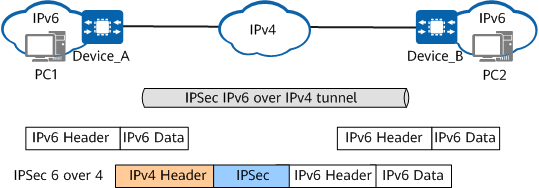
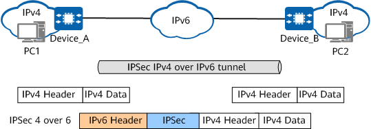

Understanding IPsec in a Transit Network
IPsec 6 over 4 and IPsec 4 over 6 can be used on a transit network and support only IPsec encapsulation in tunnel mode.
IPsec 6 over 4
In the early stage of IPv4 to IPv6 transition, IPv4 networks have been widely deployed, while only a few IPv6 networks are deployed. As IPv6 networks cannot directly communicate with IPv4 networks, these IPv6 networks are isolated by IPv4 networks and cannot directly communicate with each other. To resolve this issue, tunnels can be created on IPv4 networks to connect isolated IPv6 networks. The tunnel that connects two isolated IPv6 networks across an IPv4 network is known as an IPv6 over IPv4 tunnel. To ensure that IPv6 packets are securely transmitted over an IPv4 network, IPsec is used to protect IPv6 packets. This technology is known as IPsec 6 over 4.
Figure 1 shows IPsec 6 over 4 in tunnel mode.
Figure 1 IPsec 6 over 4 in tunnel mode
IPsec 4 over 6
In the late stage of IPv4 to IPv6 transition, IPv6 networks have been widely deployed, whereas a few IPv4 networks are deployed. As IPv4 networks cannot directly communicate with IPv6 networks, these IPv4 networks are isolated by IPv6 networks and cannot directly communicate with each other. To resolve this issue, tunnels can be created on IPv6 networks to connect isolated IPv4 networks. The tunnel that connects two isolated IPv4 networks across an IPv6 network is known as an IPv4 over IPv6 tunnel. To ensure that IPv4 packets are securely transmitted over an IPv6 network, IPsec is used to protect IPv4 packets. This technology is known as IPsec 4 over 6.
Figure 2 shows IPsec 4 over 6 in tunnel mode.
Figure 2 IPsec 4 over 6 in tunnel mode